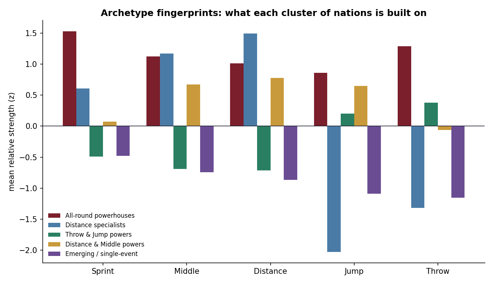

The idea
One scale for every event
Seconds, meters and placings don't add up across events, so a country strong in the hammer can't be compared with one strong in the 100 m on raw marks. World Athletics points solve that: every mark in the top lists carries a score meant to be comparable across events. Whether the tables are fair is a separate question, which I tested in the scoring-tables audit. They are what the sport uses, so they are the currency here.
A nation's strength in a discipline group is the mean of its five best WA scores in that group. A nation needs at least three performances in a group to get a score there, presence in at least three groups, and at least 12 performances overall to be profiled. That leaves 43 nations.
The heat sheet
Two nations from each archetype
Strength scores (mean of the top five WA scores) for the two highest-ranked
nations in each cluster, from tables/national_profiles.csv. The
largest number in each row is the nation's best group.
| Nation | Sprint | Middle | Distance | Jump | Throw |
|---|---|---|---|---|---|
| All-round powerhouses | |||||
| USA | 1293 | 1269 | 1282 | 1267 | 1302 |
| GBR | 1258 | 1264 | 1249 | 1209 | 1190 |
| Distance specialists | |||||
| KEN | 1224 | 1283 | 1297 | 1105* | 1122 |
| UGA | 1226 | 1199 | 1267 | 1105* | 1089* |
| Distance and middle powers | |||||
| AUS | 1200 | 1246 | 1219 | 1246 | 1198 |
| FRA | 1210 | 1244 | 1227 | 1226 | 1189 |
| Throw and jump powers | |||||
| POL | 1216 | 1200 | 1137* | 1210 | 1214 |
| NZL | 1175 | 1190 | 1137* | 1214 | 1242 |
| Emerging or single-event | |||||
| BAH | 1247 | 1156* | 1137* | 1171 | 1135 |
| TTO | 1216 | 1156* | 1137* | 1121 | 1120 |
* No score in that group; filled with the lowest score any profiled nation has there. AUS ties jump and middle at 1246 after rounding; jump is higher by 0.8.
The map
Five archetypes and one outlier
K-means (k = 5) on the z-scored strength matrix gives these groups. The labels come from code that names each cluster after its strongest groups relative to the other nations.
- All-round powerhouses (6). USA, Great Britain, Netherlands, Italy, Jamaica, Canada. Above average in every group.
- Distance specialists (3). Kenya, Uganda, Ireland. Highest on distance and middle distance, lowest of all clusters on jumps and throws.
- Distance and middle powers (10). Australia, France, Germany, Norway, South Africa, Spain, Sweden, Japan, Belgium, Switzerland. Broad programs with an endurance lean.
- Throw and jump powers (16). Poland, New Zealand, Cuba, China, Nigeria and eleven more. Slightly above average in the field and below average on the track.
- Emerging or single-event (8). Bahamas, Hungary, Algeria, Trinidad and Tobago and four more. One group that stands out, such as sprints for the Bahamas or middle distance for Algeria, with little behind it.
The USA scores 5.0 on the first principal component. Great Britain is next at 2.8 and the rest of the all-rounders sit between 1.7 and 2.2. Its summed strength (6,412) is 242 points ahead of Great Britain, while Great Britain and the Netherlands are 34 apart.

The matrix
Where each country's points come from
The clusters are computed from this matrix. Specialists show up as one or two strong cells in a row; all-rounders as rows with no weak cells.


Limitations
What this doesn't show
This measures how much elite strength a country has. How impressive that is for its size or wealth is a different question, and large countries do well on an absolute matrix. A per-capita or per-GDP view, where Jamaica and Norway would likely stand out, is left for a later version.
Two modeling choices shape the result. Averaging the top five scores protects against one freak performance, but a country with a single world-beater in a group scores modestly there. And a nation absent from a group is filled with that group's minimum before z-scoring, which treats absence as no elite presence. That is an imputation, and it pulls the specialist clusters apart.
Borderline assignments are not stable. Rerunning k-means on the committed table with scikit-learn 1.6 moves three of 43 nations: Germany and South Africa join the all-rounders and Mexico joins the emerging group. A re-fetch of the raw top lists also once gave different values from the committed table, and the cause was never found. The published numbers are the ones in this repository.
How it was built
Where the numbers come from
- Data
- World Athletics outdoor top lists, top 100 per event, scraped with mark, WA points and nationality
- Sample
- 6,400 performances, 16 events, men and women, 2023 and 2024; 43 nations profiled
- Strength
- Mean of a nation's top five WA scores per discipline group, absent groups filled to the column minimum, then z-scored
- Models
- K-means (k = 5, scikit-learn) for archetypes; PCA for the two-axis map
- Output
national_profiles.csv: each nation's five strength scores, total and archetype- Built with
- Python, pandas, scikit-learn, matplotlib
- Companion
- Scoring-tables audit, which tests the points this analysis relies on